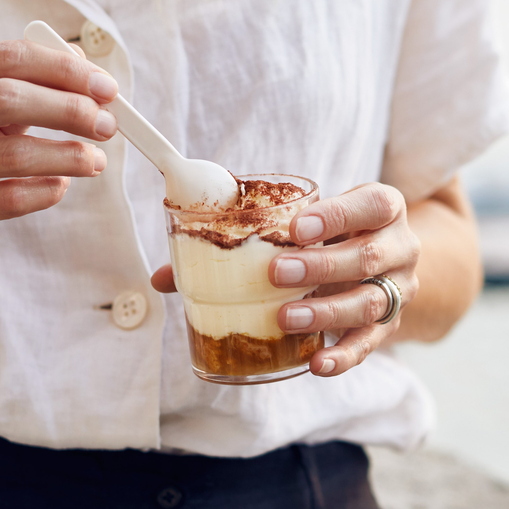

Tiramisù With Amaretti Cookies

- 6 large egg yolks
- ½ cup sugar
- 3 cups mascarpone
- 3 Tbsp. dark rum
- ¼ tsp. kosher salt
- 1 cup espresso or very strong coffee
- 1 7-oz. bag amaretti cookies (Italian macaroons; about 4 cups)
- 2 Tbsp. unsweetened cocoa powder
SPECIAL EQUIPMENT
Eight 6-oz. glasses or ramekins
- Whisk egg yolks in a medium bowl to blend, then gradually add sugar, whisking constantly until mixture is thick, smooth, and pale yellow. Using a rubber spatula, gently fold in mascarpone, rum, and salt; set aside.
- Place espresso in a small bowl. Working in batches, gently mix and turn cookies in espresso 20 seconds to soak. Divide cookies among glasses and top each with ½ cup mascarpone mixture. Chill at least 1 hour.
- Dust tiramisù with cocoa powder just before serving.
- Do Ahead: Tiramisù can be made 1 day ahead. Cover and keep chilled.